- 12 days
- 2,400 km driven
- Solo
- About £2,800–3,490
Ad: some booking links on this page are, or will be, affiliate links. If you book through them I may earn a small commission, at no extra cost to you. I only link to places and trips I actually used and paid for myself, and I say plainly when something wasn't worth it.
Part of my 11 weeks on Australia's east coast and Tasmania. This page covers Tasmania only. Each region works as a block on its own, so you can do just this one or link it to others.
Days to allow
12 days was about right. I flew into Hobart on the evening of 28 March and out on the evening of 8 April. That's 11 nights in a hire car, and I drove 2,400 km in total.
Because of the distances, some days felt rushed. Two in particular:
- Port Arthur and Wineglass Bay on the same day. I hadn't allowed enough time, so I had to finish Port Arthur by lunch, drive 3 hours north and do a 4-hour walk in 2.
- Strahan to Mt Field and Hobart. I didn't work out how far it was: 4 hours on a very windy road, 2 hours at Mt Field, then 2 more hours to Mount Wellington.
What worked best overall was checking out of the hotel and doing the drive in the morning.
The route at a glance
Hobart → Bruny Island → Tasman Peninsula → Port Arthur → Freycinet (Wineglass Bay) → Bay of Fires → Hollybank (near Launceston) → Cradle Mountain → Queenstown and Strahan → Mt Field → Hobart.
I booked a Mitsubishi Outlander through Turo, the app where people and small firms rent out their own cars. The host was Zip Auto. I picked it up at Hobart Airport and dropped it back there at the end. Mileage was unlimited, which matters on a loop this long. My booking was non-refundable after the first 24 hours.
Find a car on Turo (link coming)
A warning about Google Maps: it sent me down dirt roads more than once, including a diversion and a logging-truck road. That cost me an hour of slipping about on gravel. Check the route before you set off.
What it really cost
I travelled on my own for the whole of Tasmania, so every cost here is one person's and nothing was shared. Figures are in GBP. I booked the hotels, flights and car in advance.
| Per person (solo) | |
|---|---|
| Places to stay (11 nights, 8 places) | £1,036 paid (about £94 a night) |
| Day costs (fuel, ferries, tours, entry fees, food) | about £1,050–1,740 for the 12 days, adding up my daily estimates from the plan |
| Car hire (Turo, 28 Mar–8 Apr) | A$1,026.12 paid (about £560) |
| Flights in (Sydney → Melbourne → Hobart, Qantas, one ticket) | A$432.73 paid |
| Flight out (Hobart → Gold Coast, Jetstar) | £153.99 paid (A$281.93) |
| Total | about £2,800–3,490, plus A$432.73 for the flights in |
The car is converted at the rate I got on the same day (about 1.83 AUD to the pound), so it's approximate.
Without family or free stays: in Tasmania I paid for every night, so your costs should be close to mine. If you're travelling as a couple, you can split the room and the car between you, which brings the per-person cost down.
Fuel was expensive in places, especially around Freycinet. Port Arthur cost A$53 for the "Port Arthur by Day" ticket: site entry, the audio guide and the harbour cruise. I booked it online that morning. The Gordon River cruise cost me A$202.50, with an upper-deck window seat and a meal, after a 10% "Lap of Tas" discount.
Tasmania Parks Pass
You'll need a parks pass for the national parks (Freycinet, Cradle Mountain, Mt Field). I bought a Holiday Pass online for A$47.75. It covers all of Tasmania's national parks for two months. I bought the per-person version and nobody ever checked it, though the pass itself says it isn't meant for use with a car. If you're driving, the right one is the vehicle pass.
Holiday Pass prices (all national parks, up to 2 months), from the Parks and Wildlife Service website in November 2026:
- Per vehicle, up to 8 people: A$98.35. This is the one for a hire car.
- Per person, travelling by bus, bike or on foot: A$49.20.
The Cradle Mountain shuttle bus isn't included. Prices go up each year with inflation, so check before you buy.
The sea kayak tour with Roaring 40's cost A$295.27, booked direct with them.
Day by day
Day 1 · 28 MarchLand in Hobart
Evening flight, car pickup, then a short drive to the Kingston Hotel. Quiet evening.
Day 2 · 29 MarchBruny Island
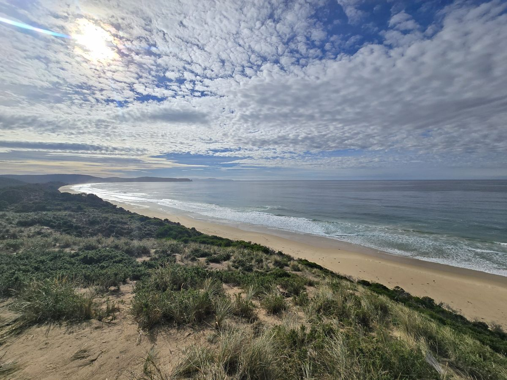
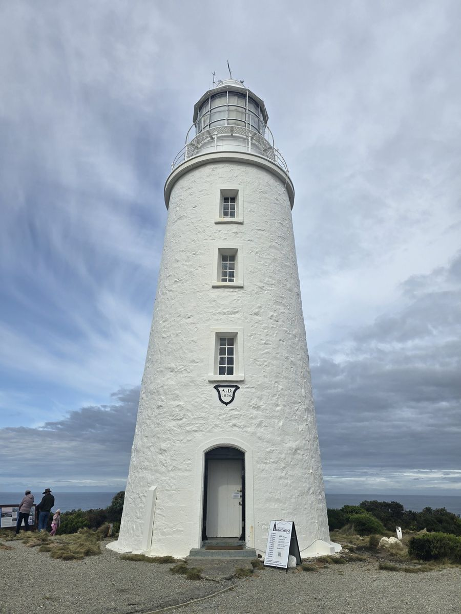
A short drive and a coffee got me to the Kettering ferry. I drove to the furthest point first, the lighthouse, and worked my way back. Then a walk on a beach I picked at random, and a hike around the point at Adventure Bay to the top of a cliff. Pizza on the way back to the ferry, then 2 hours' drive to the Lufra Hotel at Pirates Bay, Eaglehawk Neck. That stretch looked like Yellowstone.
Tip: phone signal on Bruny is awful.
Verdict: worth it. There's a lot to see, but it's spread over a long distance. Starting at the furthest point and working back to the ferry meant I always knew how long the drive back would take. You need a car: I first planned to do it by bus, and I'm glad I didn't, because you'd be stuck waiting at each stop for the next one. A day was enough for me, though I can see why some people stay overnight.
Day 3 · 30 MarchSea kayaking from Fortescue Bay
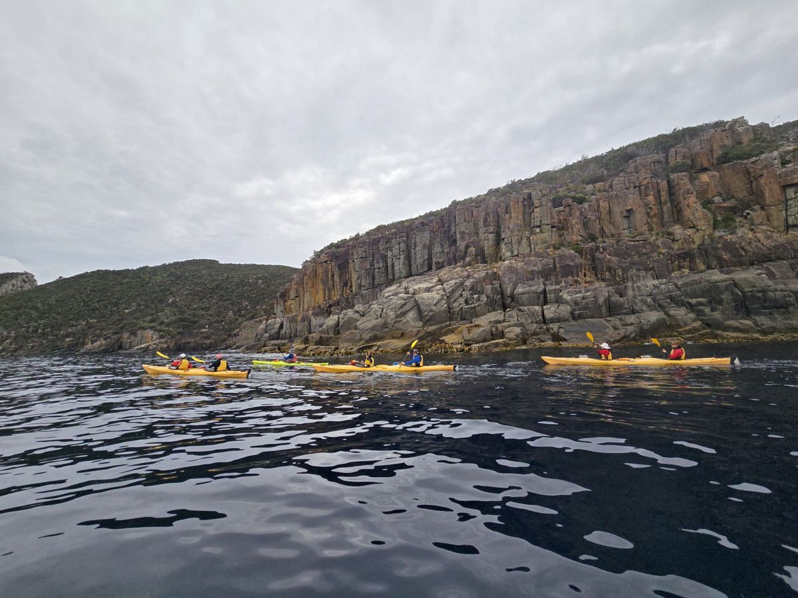
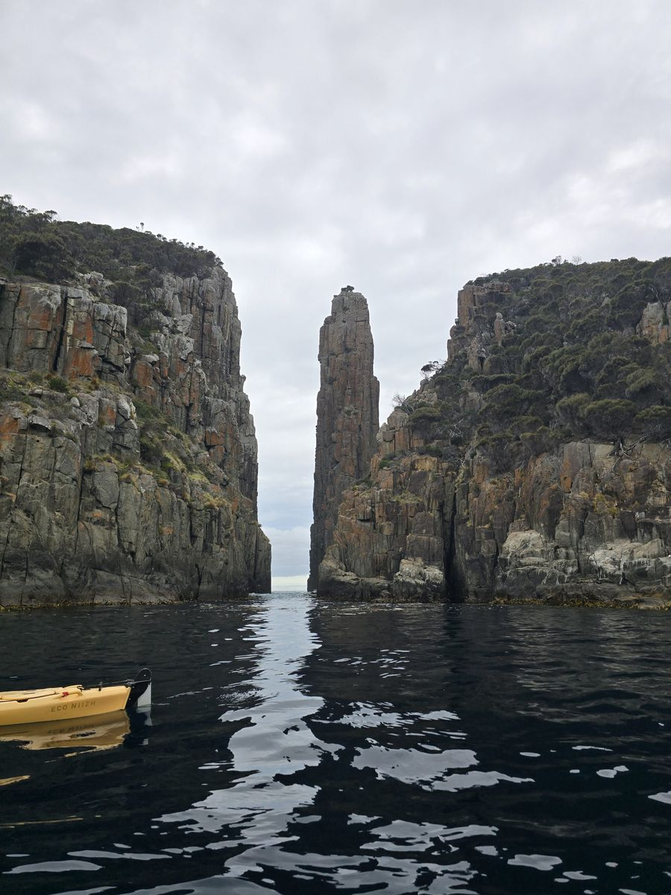
A wander on the Tessellated Pavement after breakfast, then the guided Tasman Peninsula Kayak Tour with Roaring 40's Kayaking. The weather was perfect. We paddled for 4 hours and over 8 miles in tandem kayaks, with lunch on a beach. The sea was calm enough for an open-water crossing. Amazing views and lots of sea lions. Night at The Fox and Hounds in Port Arthur.
Day 4 · 31 MarchPort Arthur, then Wineglass Bay
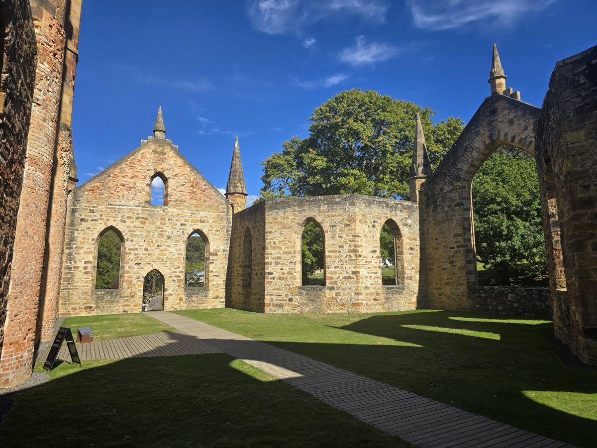
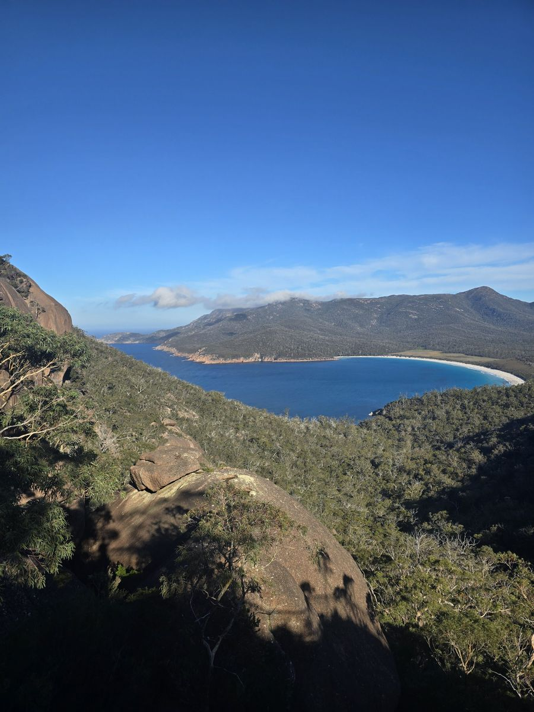
I got breakfast and was waiting at Port Arthur when the doors opened. Most people had booked tours, so I had the place to myself for the first hour, which was brilliant. Tiny cells, a well-restored site and pretty gardens, and I finished with the ferry.
Tip: the ticket lasts two days in a row, and the site suggests allowing at least 4 hours.
Then 3 hours north, including an hour of dirt-road diversion through what looked like rolling English hills. On to Freycinet. At Wineglass Bay I did the steps up to the lookout (epic), ran down to the beach, saw wallabies and then marched the 8 km long way back. I only just made it, but I found the best beach yet on the way. Definitely worth it. I stayed in a cabin at BIG4 Iluka. A campsite isn't my thing, but it was the only reasonably priced option I could find.
Day 5 · 1 AprilBay of Fires
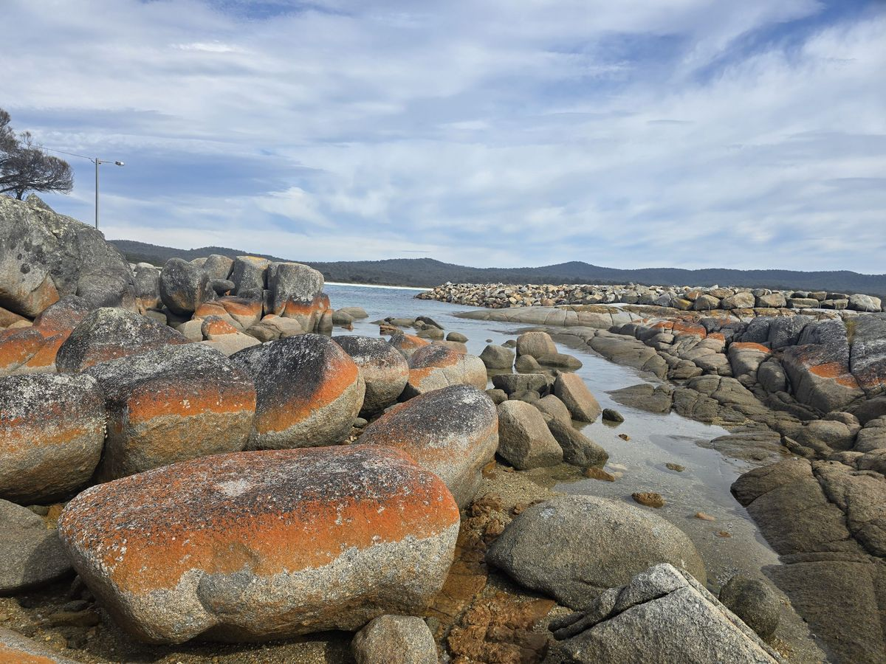
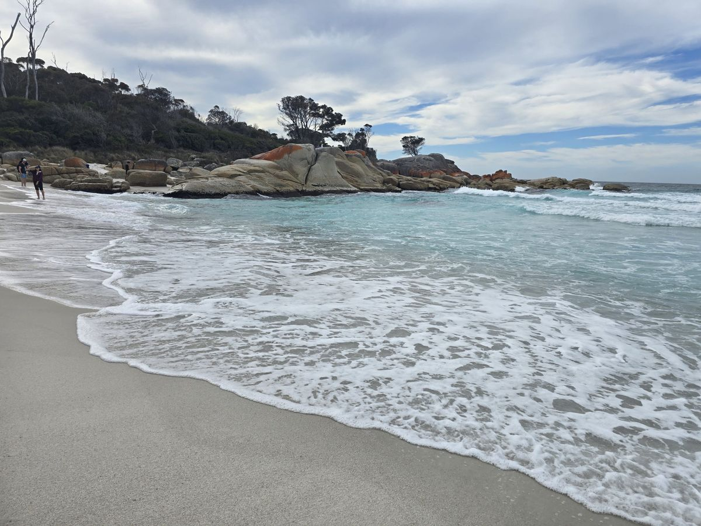
Dropped my bags at Georges Bay Apartments in St Helens and carried on. I had six stops planned and reordered them on the day:
- a blowhole that actually worked, unlike the one the day before at low tide
- a harbour at Skeleton Bay, where a huge black ray swam past (about 6 feet across)
- the orange rocks
- sandy beaches
- hours on gravel roads to see lighthouses and black rocks
- an hour just sitting on the rocks
Verdict: worth it. Seeing that ray in the wild, completely by chance, was one of my most memorable moments in Tasmania (I got some great GoPro footage of it). It's a place I could have happily stayed a couple of days and just chilled, but fitting the whole island into one loop meant that wasn't an option anywhere.
Day 6 · 2 AprilHollybank, then the cottage
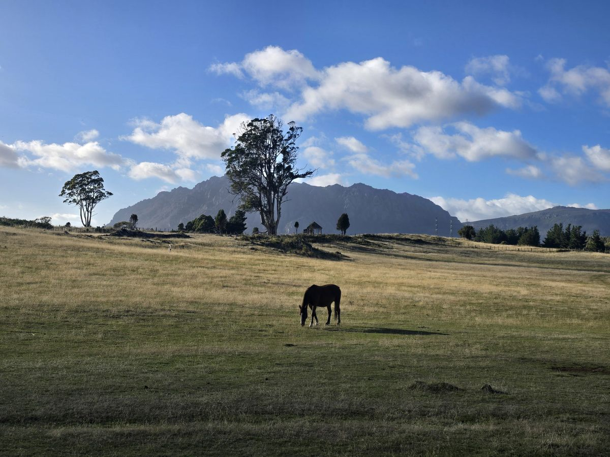
I'd booked a Segway tour and a zipline tour at Hollybank, 2 hours away. When I arrived, they told me the zipline wasn't running because there weren't enough people. They hadn't phoned to tell me because I was booked on the Segway anyway. The Segway was OK, but with only two other, slow riders it didn't really work.
Then to the AAA Granary cottage at Promised Land. It was probably lovely when it was built in the 70s, but it hasn't been touched since: loose sofa springs, weak water, a tiny shower and poor heating. The views are amazing, though, and I had a 4-bed cottage to myself.
Day 7 · 3 AprilCradle Mountain
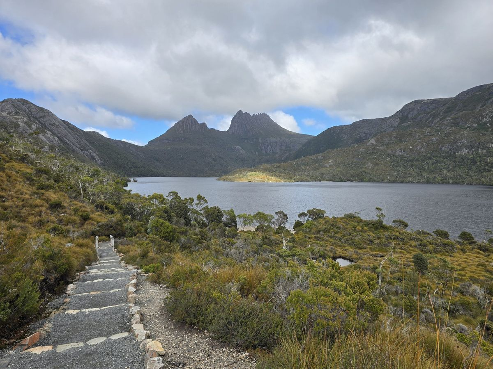
I'd set aside two days for the summit. The forecast for that day was high gusty winds and cloud; the next day looked clearer. I went anyway, planning just the Dove Lake walk. Three-quarters of the way round I had the time and energy, so I climbed up to Marions Lookout. It was absolutely stunning, with sleet and snow at the top at times. I didn't make the summit, but it was definitely worth the risk.
Mixed grill at the local bar, then a clear night with a full moon. It was lovely sitting out under the stars.
Day 8 · 4 AprilThe west coast
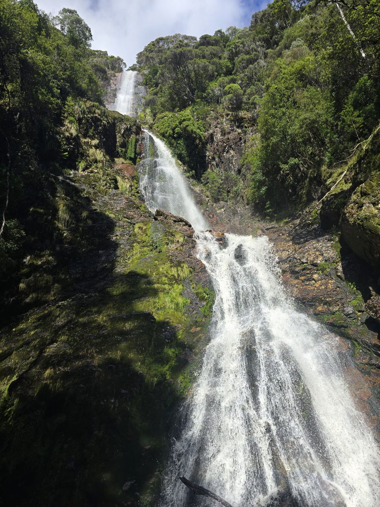
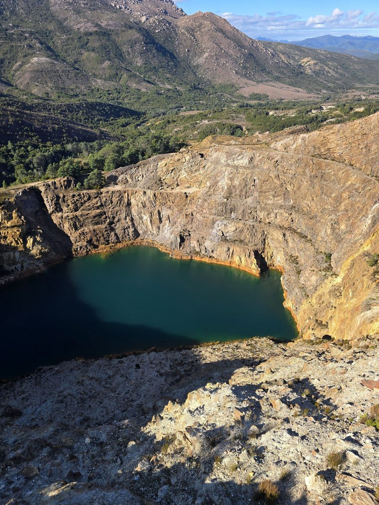
Up at 3am to look at the stars, with wallabies feeding outside. With the day I'd gained and lovely weather, I did a mix of my own picks:
- Hellyer Gorge: I found the gorge but never found the rope bridge.
- Montezuma Falls: lush, about 3 hours, and it had a rope bridge.
- Queenstown: dead over Easter, and the food was poor.
- Iron Blow mine and Horsetail Falls: both pretty impressive.
Then to Strahan, where an old railway place served the best food I'd had in Tasmania so far: burgers.
Day 9 · 5 AprilGordon River cruise
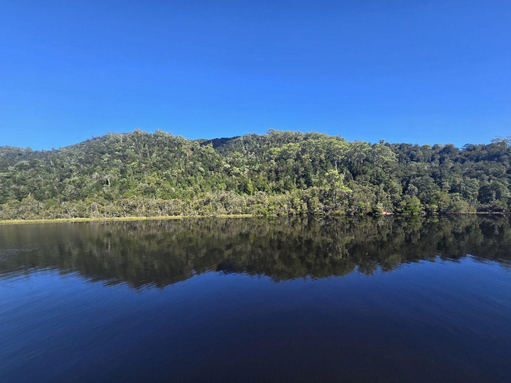
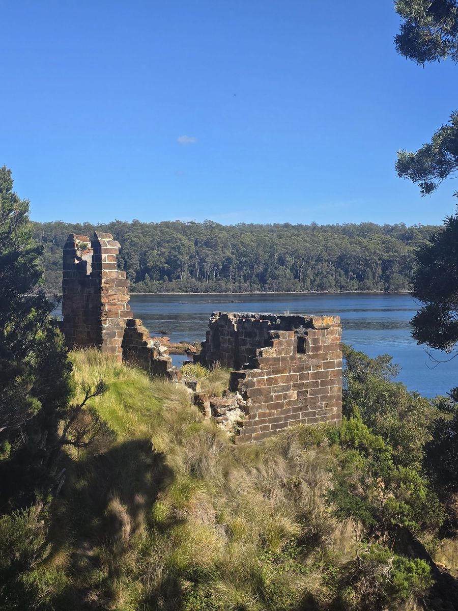
A lovely chilled day. A 6-hour boat trip with World Heritage Cruises around the harbour and up the Gordon River, stopping at the old convict colony for a rainforest walk. Very pretty. It was nice to have a relaxing day. Odd, in fact.
Day 10 · 6 AprilMt Field and Mount Wellington
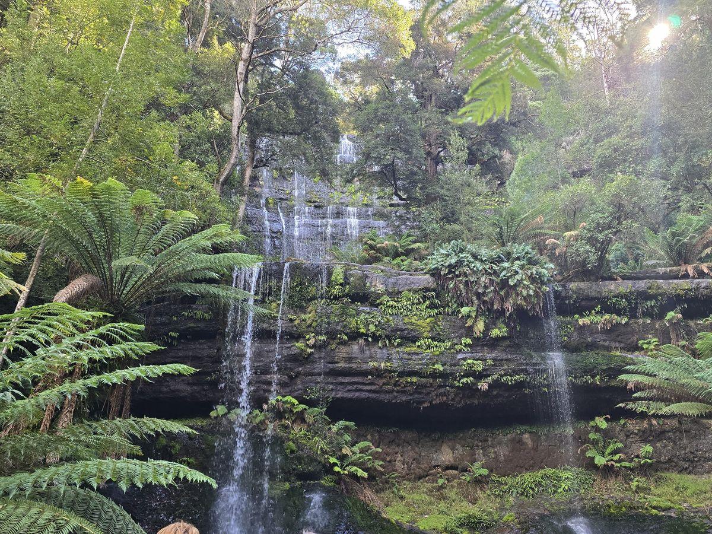
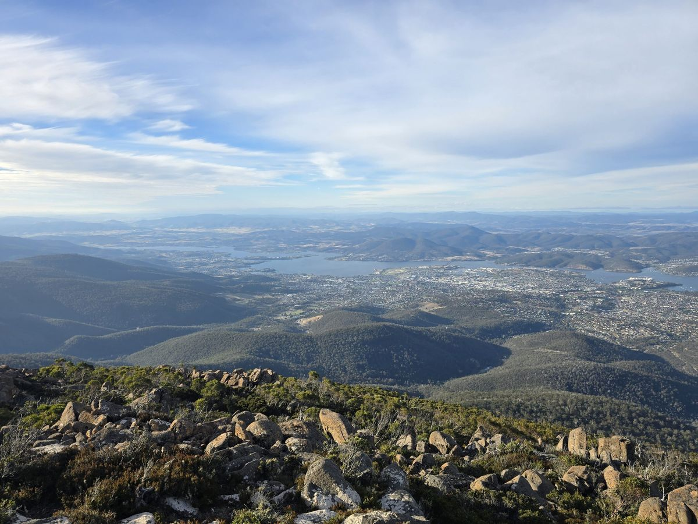
The long one. 4 hours on a very windy road to Mt Field, 2 hours walking to three waterfalls and some huge trees, then 2 hours to the top of Mount Wellington for the view. Two nights at St Ives Apartments, Battery Point, Hobart.
Verdict: Mt Field, worth it; Mount Wellington, an hour is plenty. The Mt Field waterfall walks were very nice and the more enjoyable part of the day. Mount Wellington was impressive and the views are very good, but it was busy and touristy, with few places to enjoy the view without being surrounded by people: the opposite of the rest of the trip. The drive up is simple, but you'd struggle to spend more than an hour at the top, so treat it as a short trip if you're based in Hobart.
Day 11 · 7 AprilHobart, and no MONA
I drove to MONA, only to find it's open Thursday to Monday, so it was shut. My mistake. Lucky I'd done Mount Wellington the day before, because it was now in cloud. I spent the day wandering round Hobart, then played pickleball an hour away.
Day 12 · 8 AprilBotanical Gardens, beach and fly out
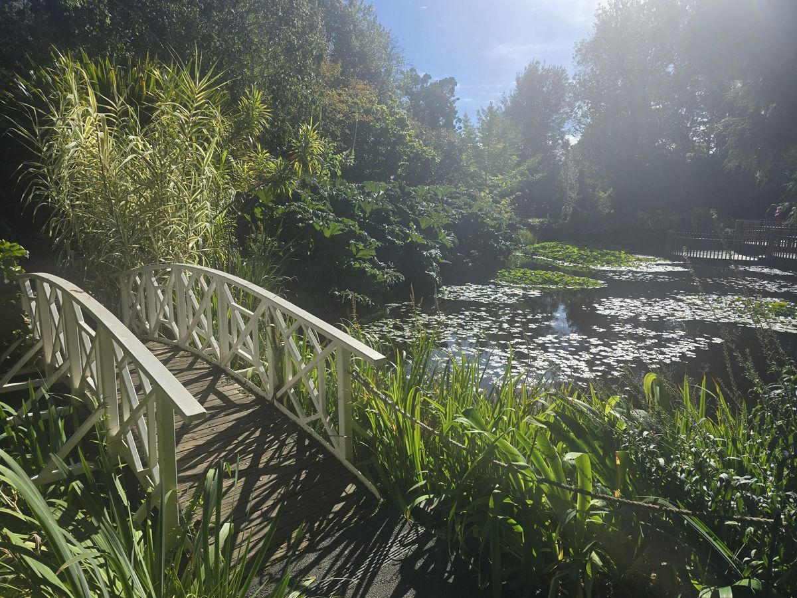
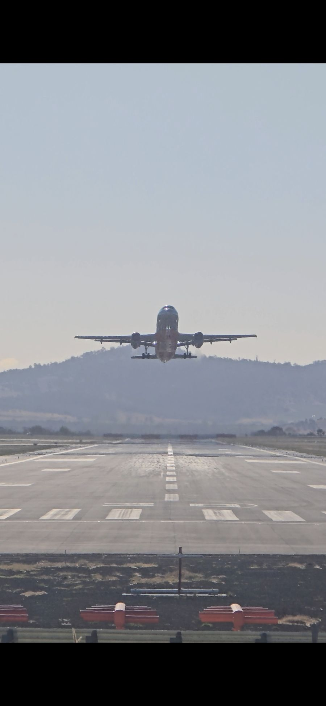
Breakfast at Sunbear (very nice) and a slow wander round the city. A couple of hours at the Royal Tasmanian Botanical Gardens. One last dirt road to a viewpoint, then lunch by the estuary, probably the best meal I had in Tasmania. Then a cold beer on the beach at the end of the runway, watching the planes take off, and a quick stop at a golf driving range on the way to the airport.
Tip: check your bags against the Jetstar weight limits before you leave.
Weather plan B
- Cradle Mountain: the day I went had a worse forecast, with gusts and cloud, but I went anyway. I started with the low Dove Lake walk and only went up to Marions Lookout once I was sure I had the time and energy. There was sleet and snow at the top. My plan B was the lower Dove Lake walk on its own, and I only added the climb once I was well into it.
- Mount Wellington: go up on the first clear day you have in Hobart. It was in cloud the next day.
- Kayaking: my day was calm, and the sea was flat enough for an open-water crossing. The route runs under tall cliffs and hills, so I think it's sheltered from the wind most of the time. I don't know what Roaring 40's does if it's rough, so ask them when you book.
Do this / skip this
Do this
- Bruny Island, by car, furthest point first. One long day was enough for me.
- Port Arthur, at opening time. I had the site to myself for an hour.
- Wineglass Bay, the full loop. Allow the full 4 hours; I did it in 2 and only just made it.
- Sea kayaking from Fortescue Bay. Perfect day, sea lions, amazing views.
- Bay of Fires. If you have time, give it two nights rather than one.
- Cradle Mountain. Start with Dove Lake and add Marions Lookout if you can.
- Montezuma Falls.
- Gordon River cruise. It's a good rest day in the middle of all the driving.
- Mt Field's waterfall walks. The highlight of that long driving day.
- Mount Wellington, on a clear day, but expect crowds. An hour at the top is plenty.
- Drive in the morning, straight after checking out.
Do differently
- Don't do Port Arthur and Wineglass Bay on the same day. Split them.
- Don't drive Strahan → Mt Field → Hobart in one day. I underestimated it.
- Check MONA's opening days. It's shut on some weekdays (I found it open Thursday to Monday only).
- Hollybank zipline: check the day before that there are enough people for it to run.
- Queenstown over Easter: expect it to be dead.
Skip
- The Segway at Hollybank. It was just OK.
Where I stayed
Prices are what I paid for the room. I was on my own, so a couple sharing would pay half each. I booked all of these on Booking.com.
| Nights | Place | Paid | What I thought | |
|---|---|---|---|---|
| 28 Mar (1 night) | Kingston Hotel, Kingston | £64 | A very big room. Perfect for a quick overnight stop after the evening flight, but not somewhere I'd stay more than one night. | Booking.com (link coming) |
| 29 Mar (1 night) | Lufra Beachside Hotel, Eaglehawk Neck | £101 | Very nice. A small room, but a comfy bed and quiet: perfect for a night's sleep. It's right by the Tessellated Pavement, which I wish I'd had longer to explore. | Booking.com (link coming) |
| 30 Mar (1 night) | The Fox and Hounds Historic Hotel, Port Arthur | £94 | Pub with food and rooms | Booking.com (link coming) |
| 31 Mar (1 night) | BIG4 Iluka on Freycinet, Coles Bay | £114 | A campsite cabin, 8/10. Good size, plenty of shared space, easy parking and washing machines. But huge speed bumps, a toilet squeezed in next to the shower and an uncomfy bed. Not my thing, but the only reasonably priced option. | Booking.com (link coming) |
| 1 Apr (1 night) | Georges Bay Apartments, St Helens | £80 | One of the better ones, and well priced. Very modern, clean and tidy, with everything you need and no faff or dealing with people. | Booking.com (link coming) |
| 2–3 Apr (2 nights) | AAA Granary cottage, Promised Land | £269 | 6/10. Huge, clean and tidy, easy check-in, and handy for Cradle Mountain and Devonport. The view, and the stars over the mountain at night, were brilliant. But it's extremely dated: broken sofa springs, poor heating outside the front room, bits of the shower falling off. If it wasn't for the view I'd have been very disappointed. | Booking.com (link coming) |
| 4–5 Apr (2 nights) | Strahan Wilderness Lodge, Strahan | £162 | 10/10, the best of the trip in Tasmania. Great location, a lovely house, a modern room and a comfy bed. All the little things were right: USB charger and extension lead by the bed, plenty of towels, space for bags, clear instructions. I wish more places in Tassie were like this. | Booking.com (link coming) |
| 6–7 Apr (2 nights) | St Ives Apartments, Battery Point, Hobart | £152 | 9/10. Modern, clean and tidy, easy parking and lovely staff. It's near a bottle shop, so there were a few drinkers about outside. | Booking.com (link coming) |
| Total | £1,036 |